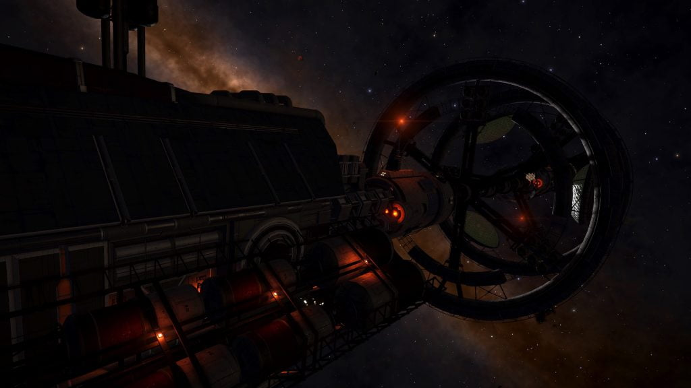

The Survey Vessel Pandora can be found in the HIP 21478 system, orbiting body A 1 f.
The existence of this vessel was hinted by the logs at Relay Station PSJ-17, and revealed by the nearby listening post:
LISTENING POST SIGNAL DATA
…Encrypted Transmission KPX-663-A Detected…
No Matching Signals Detected.
…Black Flight 22 to command. Tracking the survey vessel Pandora as instructed.
So far nothing to report, site is still secure, looks like their mission registration was for minable locations in planetary rings not planet side surveying.
Will continue to track the target through HIP 21478. 22 out.
…Signal Blocked at Source…

A series of four Ship Log Uplink points can be located along the hull, each yielding one half of two distinct logs. Deploy your ship’s hardpoints and use the onboard Data Link Scanner within 200m of each post to scan them and retrieve the logs. In addition to the text, each log is accompanied by an audio recording:
SURVEY VESSEL PANDORA, COMMUNICATIONS LOG 1/2:
This is the Survey Vessel Pandora, requesting update to mission parameters
We’ve detected an unidentified signal on the surface of a nearby planet. Request permission to investigate.
…Mission Critical Update…
Permission granted. Updating registration.
SURVEY VESSEL PANDORA, COMMANDER’S LOG 1/2:
We’ve tracked the signal to planet AB 4a in the Col 285 Sector CV-Y d57 system.
l’ve put a mission update request in, but I’m not waiting to hear back before we take a look. For all we know, we could be sitting on something special here.
Anyway, by the time we get there, we should have received the relevant permissions. No harm no foul.”
SURVEY VESSEL PANDORA, COMMANDER’S LOG 2/2:
This is interesting, our long range probes have pinpointed the source of the signal. It’s coming from what we suspect to be a a huge structure.
The permissions have arrived, just one more day and we’ ll be in orbit and ready to go down.
SURVEY VESSEL PANDORA, COMMUNICATIONS LOG 2/2:
Unidentified ship, this is the Pandora. We are a registered survey vessel on an authorised research mission. Cease fire!
Repeat we are a survey vessel. Halt your attack!
They’re not responding, we have to get out of here!
Attention all crew, abandon ship, abandon ship. Proceed to your assigned li…”
The logs give the location of a Thargoid Structure in the Col 285 Sector CV-Y d57 system on body AB 4 a, at -43.4843, 71.4501 (in Live/4.0) or at 4.7657, 136.2391 (in Legacy/3.8).